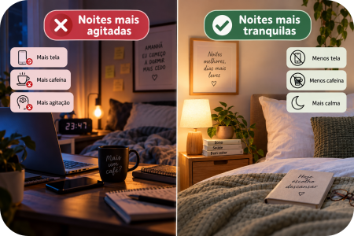

Tem noite em que o corpo está cansado, mas a cabeça parece não ter recebido o aviso.
Você deita. Pega o celular “só por cinco minutinhos”. Olha uma mensagem. Depois outra. Quando percebe, o sono ficou para depois.
Dormir bem não depende apenas de força de vontade, e dificuldades persistentes de sono podem ter diferentes causas. Mas alguns hábitos cotidianos podem ajudar a criar uma rotina mais favorável ao descanso.
O sono é considerado um dos pilares importantes para a saúde, ao lado da alimentação e da atividade física.
1. Tente criar horários mais regulares
Nosso corpo também trabalha com rotina.
Manter horários relativamente regulares para dormir e acordar é uma das recomendações relacionadas à saúde do sono. A regularidade é uma das dimensões consideradas importantes para um sono saudável.
Isso não significa olhar para o relógio às 22h01 e entrar em desespero porque ainda está acordado. 😂
A ideia é buscar, quando possível, uma rotina mais consistente ao longo dos dias.
Dica da Lu: Organize aquilo que acontece antes do sono.
Em vez de tentar “obrigar o sono a chegar”, comece organizando aquilo que acontece antes dele.
2. Diminua o ritmo antes de dormir
Talvez seja difícil passar diretamente de trabalho → mensagens → problemas → notícias → redes sociais para: boa noite, cérebro. Agora desligue. 😂
Criar uma transição entre o ritmo do dia e a hora de dormir pode ajudar a organizar melhor a rotina da noite.
Pode ser tomar banho, diminuir as luzes, deixar algumas coisas prontas para o dia seguinte ou escolher uma atividade mais tranquila.
A ideia é reduzir gradualmente os estímulos e tornar o período antes de dormir mais calmo.
3. E o celular?
Aqui mora uma batalha moderna. 😂
A Biblioteca Virtual em Saúde do Ministério da Saúde explica que a luz participa da regulação do ciclo sono-vigília e que usar celular ou assistir televisão à noite pode retardar a indução do sono. Entre as orientações para o ambiente de descanso está justamente minimizar a luz, especialmente a proveniente das telas.
Não precisamos transformar o celular em vilão. Mas talvez ele também não precise dormir praticamente em cima do nosso nariz.
Se possível, experimente reduzir o uso próximo da hora de dormir e observe se isso ajuda a tornar sua rotina noturna mais tranquila.
4. Prepare o ambiente
O lugar onde dormimos também importa.
As orientações reunidas pela Biblioteca Virtual em Saúde incluem minimizar a luz, manter uma temperatura confortável e controlar os sons do ambiente. O objetivo é criar um espaço em que seja possível relaxar.
Não precisa transformar o quarto em hotel cinco estrelas.
Às vezes são pequenas mudanças: diminuir uma luz, reduzir um ruído, ajustar a temperatura ou afastar estímulos que dificultam o relaxamento.
Método Mundo LuFiNas
5. Cafeína também merece atenção
Café, chá e outras bebidas com cafeína fazem parte da rotina de muita gente. Mas o horário merece atenção.
O material de 2026 da Biblioteca Virtual em Saúde recomenda evitar cafeína pelo menos seis horas antes de dormir.
Isso não significa que todo mundo precise abandonar o cafezinho. É apenas um hábito que pode ser observado quando a ideia é organizar melhor a rotina do sono.
6. Movimento durante o dia também entra nessa história
A prática de atividade física também aparece entre os hábitos associados a uma rotina favorável ao sono.
A orientação apresentada pela Biblioteca Virtual em Saúde é praticar atividade física, evitando realizá-la imediatamente antes de deitar.
Sono, movimento e outros hábitos cotidianos fazem parte de uma rotina de cuidado que pode ser construída aos poucos.

7. Quando não é apenas uma noite ruim?
Uma noite mal dormida ocasionalmente é diferente de dificuldades que se repetem.
A Biblioteca Virtual em Saúde destaca ronco, cansaço durante o dia e insônia como sinais diante dos quais se deve procurar ajuda médica.
Por isso, quando os problemas de sono são persistentes ou interferem no dia a dia, vale buscar avaliação profissional.
Esta matéria traz orientações gerais.
Informações gerais podem ajudar a reconhecer hábitos e sinais de atenção, mas não substituem uma avaliação individual.
Checklist da Lu
CRIE UMA ROTINA → DESACELERE → REDUZA AS TELAS → PREPARE O AMBIENTE → OBSERVE SEU SONO
Dica da Lu: Uma boa noite pode começar antes de você colocar a cabeça no travesseiro.
Para terminar...
Não existe um botão para desligar o cérebro no fim do dia.
Mas é possível organizar melhor o caminho até a hora de dormir.
Horários um pouco mais regulares. Menos estímulos. Um ambiente confortável. Menos tela perto da hora de deitar. E uma rotina que sinalize que o dia está chegando ao fim.
Pequenas mudanças podem tornar a rotina da noite mais tranquila sem transformar a hora de dormir em mais uma obrigação da agenda.
Fontes consultadas
Biblioteca Virtual em Saúde — Ministério da Saúde. “Durma Bem, Viva Melhor”: Dia Mundial do Sono 2026. Referência principal desta matéria para informações sobre regularidade do sono, ambiente, telas, cafeína, atividade física e sinais que merecem avaliação médica.
Durma Bem, Viva Melhor — Ministério da Saúde
Biblioteca Virtual em Saúde — Ministério da Saúde. “Faça da saúde do sono uma prioridade”: Dia Mundial do Sono 2025. Material complementar sobre regularidade, ambiente de sono e hábitos cotidianos.